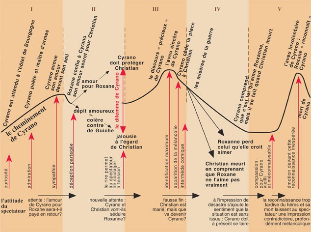

IV. Après la Nouvelle Vague (1968-2012): réalisme, comédie, héritage, banlieue, biopic…
« 1968 bouleverse profondément les rapports du cinéma avec la politique. La censure se dilue est disparaît pratiquement…Fin 1974, l'interdiction [de l'Histoire d'A, un film sur l'avortement] est levé. Un an plus tard, lorsque la vague du film pornographique déferla sur le marché, la censure ne se manifesta pas: c'est par une mesure fiscale (le classement 'X' qui implique une taxation accrue dur les films et les salles qui les diffusent) que le pouvoir tentera de l'endiguer.
« Les FILMS POLITIQUES se multiplient, à tous les niveaux de production: Z de Costa-Gavras, tournés avec de gros moyens et des acteurs populaires, est un succès commercial de l'année 1969.
« [L]es premières années soixante-dix sont aussi un temps de reclassement. La Nouvelle Vague n'est plus qu'un écho, ou un label. Il n'y a plus d'école, plus d'unité entre les cinéastes issus dix ans plus tôt de la rédaction des Cahiers du Cinéma…». Néanmoins, ces cinéastes et d'autres continuent à faire des films importants: François Truffaut, Claude Charbrol, Eric Rohmer, Jean-Luc Godard, Jacques Rivette, Louis Malle, Jean Eustache, Alain Resnais, Agnès Varda. Par contre, « René Clair a tourné son dernier film en 1969, Jean Renoir en 1969, Clouzot en 1967…Robert Bresson, en revanche, creuse imperturbablement son sillon… Il est reconnu, admiré, il intimide par sa rigeur (Jeancolas, 74-75)
Au mileu des des années soixante-dix, le cinema prend conscience d'une évolution de son statut: il n'est plus le seul ni le principal média distributeur d'images, ou de rêve:
1. CINÉMA ET TÉLÉVISION… La télévision est devenue un gigantesque distributeur des films. L'apparition des chaînes privées, la privatisation de la première chaîne cryptée Canal +, puis le développement des réseaux câblés qui hébergent des chaînes spécialisées visant prioritairement le public des cinéphiles, on créé un gigantesque marché et révalorisé une partie du patrimoine accumulé depuis le passage au parlant» (Jeancolas, 78-79).
2. UN CINÉMA DES DIFFUSEURS. UGC, Pathé, Gaumont: les cinémas multisalles. «C'est sur ce terrain commercial miné que le cinéma français affronte une concurrence chaque année plus difficile avec son vieux rival américain» (Jeancolas, 81).
Vers le milieu des années soixante-dix, le cinéma devient une nébuleuse en expansion permanente… Le 'jeune' cinéma français ne constitue pas en cercle, mais en amas de matière riche, inorganisée, en effervescence continue. Près de trois cents metteurs en scène ou metteuses en scène ont tourné un premier film, et plus de la moitié de ces en ont tourné un second–on admet que c'est ce passage au second fil, qui est le véritable brevet d'accès à la profession » (Jeancolas, 95-96).
A. Le film politique; de conscience sociale: Z Costa-Gavras (1969)
- Toute ressemblance avec des évènements réels, des personnes mortes ou vivantes n'est pas le fait du hasard. Elle est VOLONTAIRE. Z
Contexte historique:
1) L'expression "Guerre froide" désigne la période de tension et d'hostilité qui opposa les États-Unis et l'URSS, ainsi que leurs alliés respectifs au cours de la seconde moitié du XXe siècle. Elle est caractérisée par une bipolarisation du monde et un rapport de force armé entre les pays de l'OTAN et ceux du Pacte de Varsovie, appelés aussi respectivement le bloc de l'Ouest et le bloc de l'Est.
Après la fin de la Seconde Guerre Mondiale, les deux vainqueurs de l'Allemagne nazie se retrouvent face à face, opposés à la fois sur leur système économique et sur leur manière de concevoir la vie politique.
Les deux camps évitent l'affrontement direct qui aurait conduit à l'usage de bombes atomiques (équilibre de la terreur). Mais la Guerre froide se pratique par tous les moyens :
- course aux armements pouvant déboucher sur des crises graves (Cuba en 1963),
- espionnage,
- idéologie,
- propagande,
- conquête de l'espace,
- compétitions sportives...
La Guerre froide se déroule partout sur le globe avec des affrontements indirects entre les deux superpuissances au travers de leurs alliés respectifs (guerres de Corée, du Vietnam, d'Afghanistan).
Tous les historiens ne s'accordent pas sur les dates de début et de fin, de 1945, 1947 ou 1948 jusqu'en 1963 (crise de Cuba), voire 1991, date de la disparition de l'URSS et de la dissolution du Pacte de Varsovie. (http://www.toupie.org/Dictionnaire/Guerre_froide.htm)
2) 1962 L'Algérie devient indépendante. (Z sera tourné à Alger, en Algérie en juillet 1968)
le 22 mai
1963 le député grec Grégorios Lambrakis est mortellement blessé par un triporteur, alors qu’il sort d’un meeting pacifiste à Salonique organisé pour protester l'installation des missiles Polaris américains en Grèce.
le 22 novembre 1963 l'assassinat du Président Kennedy à Dallas, Texas.
Le 17 avril 1967, raconte le cinéaste d’origine grecque Costa-Gavras, j’étais en Grèce pour voir mes parents. Le 19, dans l’avion du retour, j’ai lu le livre de Vassili Vassilikos sur l’affaire Lambrakis et décidai sur-le-champ de l’adapter pour le cinéma. Le 21 avril, les colonels prenaient le pouvoir…".
1968 "Les Evènements de mai" (révolte étudiante et ouvrière) en France
1 avril 1968 l'assassinat de Martin Luther King, Jr.
5 juin 1968 l'assassinat de Robert Kennedy
Le film sort en février 1969 et rencontre un énorme succès, remportant également un prix d’interprétation à Cannes pour Trintignant et deux Oscars (film étranger - pour l’Algérie - et montage). Pour le scénariste, Jorge Semprun, "la secousse de Mai 68 a eu, sans doute, des conséquences directes sur l’impact social de Z. D’abord, parce qu’elle a fait sinon naître du moins cristalliser de façon durable un vaste public pour ce genre de films politiques. Réalisé avant Mai 68, au moment où le projet avait été conçu, Z n’aurait peut-être pas eu une influence aussi vaste et prolongée dans le public populaire. " (Lombard)
"There are some things that refuse to be covered over. It would be more convenient, yes, and easier for everyone if the official version were believed. But then the facts begin to trip over one another, and contradictions emerge, and an "accident" is revealed as a crime.
The film "Z" is about one of these things: about the assassination, six years ago, of a leader of the political opposition in Greece. It is also about all the rest of them. For Americans, it is about the My Lai massacre, the killing of Fred Hampton, the Bay of Pigs. It is no more about Greece than "The Battle of Algiers" was about Algeria. It is a film of our time. It is about how even moral victories are corrupted. It will make you weep and will make you angry. It will tear your guts out". ( Ebert)
"Costa-Gavras’s father had fought against the Nazis in the left-wing Greek resistance movement, but after World War II was labeled a Communist by the country’s new government and imprisoned. This political blacklisting of his father precluded education in Greece for Costa-Gavras and even caused him to be denied permission to study film in the United States. So instead he moved to Paris, where he enrolled at IDHEC. Working as an assistant to René Clair, René Clément, Henri Verneuil, Jean Becker, Jean Giono, and Jacques Demy gave him a grounding in form and innovation that became instantly apparent in the stylish assurance of his 1965 debut feature, The Sleeping Car Murders…
Costa-Gavras learned crime-movie procedurals from Clément and Verneuil, but Z adds new dimensions: outrage and fear. The breakdown of social order is implicit in scenes of the assassins’ brutal escape and the bureaucracy’s remorseless cover-ups. Z isn’t a whodunit, it’s a how-was-it-done. Its fascination comes from blunt confrontation with the treacherous behavior of political adversaries. It has visceral impact, such as when a henchman (Marcel Bozzufi) fights an organizer (Bernard Fresson) on the back of a truck. Adept at the mechanics of the thriller, Costa-Gavras sharpens the viewer’s social consciousness with both political exactitude about the stress of fascist oppression—demonstrated through the fearful military and the defensive organizers—and journalistic outspokenness, embodied in the reporter (Jacques Perrin) who witnesses the assassination and uses a camera to document his own investigation. This sixties muckraking spirit is consonant with Rosi, Petri, Pontecorvo, even Godard’s political allegory Made in U.S.A, where the movie’s dynamics convey the tension and pressure of political awareness. Because Z is as exciting as it is enlightening, the movie brings home the weight of political activism besieged by intractable conservative forces. (White)
B. Le cinéma du look Diva, Jean-Jacques Beineix (1981)
Contexte historique des années 80 à Paris
LE CINÉMA DE FASCINATION, LE CINÉMA DU LOOK. «Le cinéma de la fascination et celui de la galaxie BBC (Beineix-Besson-Carax) associant trois créateurs mégalomanes pour qui l'image, l'image qui brute telle que la publicité l'a valorisée, ou l'image-signe, telle que l'ont iconisée la mémoire du cinéma en général et l'écran de la Cinémathèque en particulier, prime sur le sens et s'érige en objet de culte » (Jeancolas, 95-96).
Diva se caractérise par une photographie soignée et ambitieuse, des couleurs vives et accrocheuses, des éléments de décoration inspirés du pop art, des mouvements de caméra inhabituels pour l'époque. La critique se déchaîne lors de la sortie, qualifiant de « cinéma du look » ce film qui pourtant aujourd'hui, ne se démarque plus de la plupart des productions française. Tout comme les productions de Luc Besson, le film connaît une réel succès aux États-Unis l'année suivante. (wikipédia)
"The Cinéma du look was a French film movement of the 1980s. It referred to films that had a slick visual style and a focus on young, alienated characters that were said to represent the marginalized youth of Francois Mitterrand's France. The three main directors of the Cinéma du look were Jean-Jacques Beineix, Luc Besson and Leos Carax. Themes that run through many of their films include doomed love affairs, young people with peer groups rather than families, a cynical view of the police and the use of the Paris Métro to symbolize an alternative, underground society. The mixture of 'high' culture, such as the opera music of Diva and Les Amants du Pont-Neuf and pop culture, for example the references to Batman in Subway, was another key feature. Unlike most film movements, the Cinéma du look had no clear political ideology.
Critic Ginette Vincendeau defined the films made by Beineix and others as "youth-oriented films with high production values...The look of the cinéma du look refers to the films' high investment in non-naturalistic, self-conscious aesthetics, notably intense colours and lighting effects. Their spectacular (studio based) and technically brilliant mise-en-scène is usually put to the service of romantic plots" (wikipédia).
Les Critiques ont dit:
La Croix
« Premier film de Jean-Jacques Beineix, dont l’originalité est d’amalgamer le genre polar à la grande musique (...). Diva vous fait aller de surprise en ébahissement. Le suspense y est aussi bien servi que l’art lyrique ».
Jean Rochereau, 14/03/1981
Le Matin
« Des décors hyperréalistes, une photographie somptueuse signée Philippe Rousselot, une mise en scène bourrée d’invention, le tout sur fond d’opéra. Plus étonnant encore, l’affiche du film sur laquelle aucun acteur connu ne figure, à l’exception de Jacques Fabri ; le réalisateur étant un complet débutant. Une surprise de taille ».
Marie-Elisabeth Rouchy, 11/03/1981
Le Pariscope
« Il y a dans ce film une atmosphère, un ton, une image dignes des plus grands peintres comme Magritte ou Delvaux. Tout est fait pour étonner, séduire, fasciner, troubler (...). Un grand moment de cinéma, un film qu’on a envie de voir deux fois tant il se passe de choses sur l’écran ».
André Halimi, 18/03/1981
« Il y a dans Diva une passion effrénée de filmer tout à fait excitante. Un besoin de séduire et, dans le même temps, un goût de la provocation – que Jean-Jacques Beineix revendique – absolument irritant. Une profusion d’effets, de recherches de cadrages, de montage : une quête de cadres, de décors étranges, insolites, merveilleux. Une poésie ou l’hyperréalisme et le surréalisme se mêlent au fantastique quotidien. Du culot, de l’audace, de l’anticonformisme, du tempérament, du talent... »
José-M. Bescos, 25/03/1981
The New Yorker
"
Actually, the entire movie demonstrates the richness that you can get only from movies. If it’s about anything, it’s about the joy of making them… Beineix may not be interested in what’s underneath, but he has a great feeling for surfaces. A chase through the Métro and an escape to a pinball-machine and video-game arcade are so ravishing that they’re funny, intentionally. The whole high-tech incandescence of the film is played for humor. Beineix takes it for granted that we’ll make all sorts of connections between his images and other movies we’ve seen – Cynthia Hawkins at the start is like Arletty’s Garance in “Children of Paradise”; a police informer who works on a boardwalk operating a Wheel of Chance has layer upon layer of movie associations; there’s a little salute to Marilyn Monroe in “The Seven Year Itch” and Welles is in the huge deserted bluish factory where the all-knowing Gorodish arranges a meeting with the villain – it recalls “The Trial”. Welles is everywhere. But Beineix doesn’t force connections on us. Everything is deft, flamboyant yet light – Jules takes Cynthia Hawkins’ pearly satin gown and flings it around his neck, like a First World War aviator’s scarf, as he rides off on a borrowed motorbike. In the factory, Gorodish’s tape-recorded voice directs the villain. Every shot seems to have a shaft of wit. It’s Welles romanticized, gift-wrapped. It’s a mixture of style and chic hanky-panky, but it’s also genuinely sparkling. The camera skids ahead, and you see things you don’t expect. Beineix thinks with his eyes." Pauline Kael, April 19, 1982.
C. Cinéma d'auteur féministe, La Nouvelle Vague Rive Gauche, cinéma du puzzle; Sans toit ni loi Agnes Varda (1985)
Le cinéma féministe: The Bechdel Test. Varda sur le féminisme: En plateau, Agnès VARDA répond aux questions de Sylvain Augier concernant son intérêt pour la condition des femmes : "Partout dans le monde, les femmes sont à la peine… Ce n'est pas parce que quelques femmes s'en sortent que l'affaire est réglée. Les femmes ne doivent pas baisser les bras, c'est à elles de continuer à faire réfléchir, on n'est pas forcément obligé de hurler, de jeter les soutien gorges dans la rue, on peut être féministe de façon intelligente et harmonieuse mais il faut tout le temps le dire, le redire et agir".
Unique cinéaste femme de la Nouvelle Vague, Agnès Varda accordera tout au long de son œuvre une place de choix aux femmes, à leurs droits, à leurs désirs. (lux-valance.com)
Varda: "This film is really about a woman who has given up all the rules, including the one that says that everyone—especially women—should try to please…In that minimal situation where you have no home, no bread, where you have to fight just to survive—What is the energy like of simply being alive ? That’s what I wanted to express. And I thought that type of character would be much more interesting than a victim. Even though she dies in a ditch, she’s a survivor. " (Flitterman-Lewis, Desire, 309)
Varda, Sans toit ni loi et la Nouvelle Vague: "It is also true from the standpoint of narration that, with this film, Varda proves herself to be a true contemporary exemplar of both the New Wave and Left Bank filmmaking of her formative years. In a structure that might be called ‘Jean-Luc Godard meets Alain Resnais’…With Godard it shares the episodic narration that fragments linear causality into a series of ‘situations’—each with a demonstrable social lesson, and each with an invitation to the spectator’s critical judgment. It also shares his interest in the blending of different discourses and mixed modes into a film-collage that interrogates its own methods. … And, no stranger to cinematic rule violation…Varda has provided in Vagabond a virtual handbook of such instances (violations of the 180 degree rule, the axis match, movement and direction matches, and of course, the jump cut) worthy of Breathless itself. Likewise, Varda shares with Resnais as complicated a temporal construction as can be achieved in film, weaving threads of narration into sequences that disappear and return with compelling fluidity, while structures of memory (such as the flashback for example) are rendered with the reality of present perception. Time is expanded in Varda though the delayed testimonies of characters who have perhaps been forgotten ; it is condensed through unexpected ellipses that compress events into nothingness. Along with this goes the circularity of the film itself, ending where it had begun, bringing us back to the image which has haunted us…from the start…To say that Vagabond shares its strategies of distancing with Godard and Resnais is to attest to the exemplary status of all three directors who, each in their particular way, have pushed the limits of cinematic expression in their simulataneous concern with discursive and visual forms. (Flitterman-Lewis, Desire, 298-299)
Varda—Photographie et cinéma: «[L]a photographie me semblait trop muette. C’était un peu Sois belle et tais-toi.…» Elle voulait combattre «la sensation aiguë du temps qui passe et de l’érosion des sentiments qui nous infligent moissures, rouilles, humiliations pas digérées et blessures qui ne se ferment pas… J’avais la sensation que le cinéma s’était fourvoyé dans une fiction cinématographique et qu’il n’abordait ni les problèmes traités par le roman, ni les problèmes de l’existence … J’avais la sensation qu’on ne parlait pas de choses vivantes, importantes, que d’autre part le cinéma n’était pas libre, surtout dans sa forme, et ça m’énervait.» (Smith, 4-6)
Varda's cultural references were literary and artistic. The Surrealists were an early discovery, Kafka had impressed her, Faulkner’s narration was inspirational at the time of La Pointe courte [Les Palmiers sauvage comme dans À bout de souffle], and Nathalie Sarraute [un auteur du nouveau roman, comme Marguerite Duras qui a écrit Hiroshima mon amour] has been a pervasive influence throughout Varda’s work—Sans toit ni loi is dedicated to her and borrows part of the plot from her novel Le Planétarium. (Smith, 12)
Cinéma de puzzle: “If you tell the story of Citizen Kane,” Varda has said, “it’s not much of a story. An old rich mogul man is dead. He said a word we don’t understand. We don’t discover so much, just some pieces of his life and finally it is just a sled. Is that a story? It is not much. So what makes Citizen Kane so interesting is the way [Welles] told us about the man—intriguing us about what people think about him.” And, with as much perversity as playfulness, Varda gives us the total inversion of Welles’ masterpiece in Vagabond: a young, poor vagrant woman is dead. She died in a way we don’t understand. We don’t discover so much, just some pieces of her life and finally it is just a pagan ritual of the vine" (Flitterman-Lewis, Vagabond).
Cinéma d'auteur: cinécriture: «J’ai lancé ce mot et maintenant je me sers pour indiquer le travail d’un cinéaste. Il renvoie à leurs cases le travail du scénariste qui écrit sans tourner et celui du réalisateur qui fait sa mise en scène. Cela peut être la même personne mais la confusion persiste souvent. J’en ai tellement assez d’entendre: “C’est un film bien écrit’, sachant que le compliment est pour le scénario et pour les dialogues.
Un film bien écrit est également bien tourné, les acteurs sont bien choisis, les lieux aussi. Le découpage, les mouvements, les points de vue, le rythme du tournage et du montage ont été sentis et pensés comme les choix d’un écrivain, phrases denses ou pas, type de mots, fréquence d’adverbes, alinéas, parenthèses, chapitres continuant le sens du récit ou le contraiant, etc.» (cité dans Smith, 14)
«Dans Sans toit ni loi, ils ont 'fait l'acteur" mais comme si c'était un documentaire. Mes méthodes se mélangent tout le temps. Je pense avoir réussi Sans toit ni loi. Je le dis sans fausse modestie parce qu'après trente ans de cinéma c'est le film où exécute le mieux mon projet de faire du cinéma de fiction de texture documentaire. Surtout aussi mon projet de 'cinécriture' avec des plans structurés dans l'espace, sans psychologie, par exemple les travellings de la 'marche' de Mona, en tant que sujet (cité dans Singerman, 358).
Langage cinématographique: Les Travellings de la Grande Série, point de vue, retours en arrière, sautes en avance…
In this film there are 18 points of view; 14 tracking shots… only six stories where the portrait and the images are in tandem (ie Mona arrives and the person whose path she has crossed immediately picks up the description). Otherwise they assume two forms. The first is a flash-forward within a flash back, that is to say, we see the end of the story or encounter before we perceive the occurrence which preceded or brought about that encounter…The second form, far more digressive in fact, is a form whereby an initial flashback is interrupted by the insertion of other flashbacks only to be picked up again at some later juncture.
The tracking shot is a natural icon for a road movie as are the stops in between…Thus Varda states in an interview that «Tout le film est un long travelling; on le coupe en morceaux, on écarte les morceaux et là se placent les 'aventures'»…However, from its very inception this film goes counter to the canonic laws. First, it is filmed going backwards down the road (the tracking from right to left); second the narration is a series of flashbacks all interwoven rather than an ordered sequence of events which lead inexorably to a bad end (Easy Rider) or a reasonable resolution (Paris, Texas)—furthermore, in Varda’s film the spectator and the speculators already know the end; third, the tradition is for the point of view to be that of the roadster(s), but in this film it is everyone else’s but Mona’s that is given; fourth, the roadster is in this instance a woman on her own; fifth, a road movie implies some self-knowledge—but that is not the purpose here: in her filth and her solitude, Mona has acquired her identity, her marginality, and gazes uninterestedly past the others—including us. And her death, which she finally stumbles upon by tripping over an irrigation pipe, leaves us silent in its irony, coming as it does to she who emerged Aphrodite-like from the sea and whose pursuit of and longing for drinking water punctuates the entire film (Heyward, 272, 273-274).
Mona et Aphrodite Sandro Botticelli - La nascita di Venere (1486)

D. Le Cinéma de patrimoine, la superproduction culturelle, the heritage film, Jean de Florette, Manon des sources Claude Berri, 1986
Retour au Cinéma de Papa et le Cinéma de Qualité: grand budget (Jean de Florette: $17 million vs 400 Coups: $50-75,000), adaptation littéraire, montage classique (invisible/ continuity editing), maîtrise technique, flou artistique (soft focus), gros plans et plans d'ensemble, grandes vedettes+ motivation politique et sociale, soutien financier.
"In the 1980s an ailing French film industry was revitalised by state support for a series of well-made costume dramas which came to be known collectively [in English], by their subjects and styles as heritage cinema. None is more characteristic than Claude Berri's Jean de Florette.
The heritage film project was developed as part of the Left's political-cultural agenda following François Mitterand's election victory in May 1981. After a decade of declining cinema attendance, when previously loyal audiences for French films would only desert their television viewing for Hollywood blockbusters, the new Culture Minister, Jack Lang, set about reversing this unwelcome trend. Innovative funding arrangements privileged films which, through their narratives, locations, and stars, actively celebrated traditional French values and achievements… These historical and literary recreations enjoyed high production values with meticulous attention given to period, locations, costumes and artifacts. This new generation of of super productions constituted a quality-based, popular cultural cinema calculated to win back audiences from Hollywood blockbusters disseminating seductive but alien values…
As a close reworking of Marcel Pagnol's celebrated regional epic, L'Eau de collines (1963), Berri's Jean de Florette and its sequel Manon des sources (also 1986), readily satisfy heritage film criteria: a popular source novel by a much loved author; a narrative set in unspoilt Provence of the 1920s, French stars, Yves Montand and Gérard Depardieu…the 'popular international icon of Frenchness in leading roles…" (Cousins, 185-186).
Claude Berri, surnommé « le dernier nabab » ou « le parrain » du cinéma français. At the César Awards ceremony in 1993, the host Frédéric Mitterand said of Berri, "Yes indeed, Claude Berri, if the French cinema is still alive today, it's in large measure thanks to your support"…In a career notable for a combination of enterprise, optimism and flexibility, Berri exemplified all the tacks and turns that the French cinema had made since the New Wave in its quest to remain vital and important. He started out as an actor, in the 1960s directing small semi-autobiographical films in which he played the leading role. None achieved any great commercial success. So he began to produce the films of his contemporaries, including Maurice Pialat, Jacques Rivette, Bertrand Blier and Claude Sautet. Then in 1973 he became partner in the distribution company, AMLF, whose releases ranged from the hugely popular French comedy Les Ripoux (1984) to such Hollywood films as Apocolypse Now (1979) and Amadeus (1984). This varied activity represented the pragmatic attitude of a survivor. As Berri put it himself: 'Out of my failure as an actor was born my desire to direct. Then my relative failure as a director forced me to become a producer. In order to get my films shown, I became a distributor. One had to eat, that’s all.' The journey reflected a French cinema that by the 1990s had become far too diverse to be associated with any single movement or direction, so that the most successful rallying point—especially given the industry’s increasing sense of embattlement—was the promotion of Frenchness itself" (Drazin, 371-372).
"An accurately crafted record of France's disappearing rural past was further assured by meticulously researched design and reproduction of costumes, house interiors and farming implements, while some 12,000 carnations and several ancient olive trees were imported to complete the farming mise-en-scène. The thirty-week shooting schedule, extended from April to December 1985, enabled [cinematographer] Nuytten to follow the farming character and to captalise on the landscape's seasonal changes" (Cousins, 188).
"The rural narrative has always held a particular attraction for the French. Despite increasing industrialisation and the consequential rural exodus to urban conglomerations. France, with its still important agricultural economy, has retained a strong allegiance to its varied provincial traditions, regional gastronomy and local wines… With its high production values and widescreen presentation boasting Dolby sound, Jean de Florette was designed as a crowd-pleasing spectacle. Nuytten's pictorialist cinematography with slow sweeping pans periodically establishes, without implied character-based perspective, the rugged seasonal beauty of the Provencal landscape from snow-covered mountains and rain-soaked fields to the parched, withered landscape of summer's blinding light and unrelenting heat. Composition and framing underline the central significance of family houses in medium close tableau shots while close-ups document the traditional social mores of rural existence: drawing water from the well, extracting honey from the comb, stopping the deceased person's clock, pouring pastis over a sugar lump" (Cousins, 191).
"A powerful, well-crafted narrative, high production values, outstanding star performances and painterly cinematography all contributed to establishing the Jean de Florette dynasty. The simple dramatic tale of inheritance, paternity, family loyalties and the epic struggle between the individual, the elements and the land, resonated with French sensibilities. The emblematic rural setting and nostalgic evocation of bygone ways clearly touched a chord with audiences in the socially and politically problematic 1980s when French traditions seemed under threat (Cousins, 194).
« Jean de Florette, qui veut retourner à la campagne et cultiver 'l'authentique', est un idéaliste, héritier plus ou moins direct de la tradition rousseauiste. Son échec signifie donc que Pagnol se démarque de cette tradition intellectuelle et qu'il ne considère pas le monde paysan comme un univers parfait et sans conflits.
Mais il ne caricature pas non plus les paysans (sauf quelques traits, comme la méfiance presque congénitale du village à l'égard des 'étrangers') et il essaie au contraire de montrer les motivations profondes d'Ugolin et du Papet : la 'soif de terre', caractéristique traditionnelle dans la représentation littéraire, est ici justifiée et s'explique par des motifs parfaitement compréhensibles pour un citadin (gagner de l'argent grâce à une culture nouvelle).
Le message de Pagnol est donc profondément humaniste dans la mesure où, sans ridicule ni manichéisme, il essaie de représenter le point de vue et les motivations de chacun…
Par ailleurs, dans la même perspective humaniste, l'histoire de Jean de Florette et de Manon des Sources démontre que, par delà leurs différences apparentes (sociales, locales, physiques...), les hommes sont semblables et doivent tous être traités humainement : celui que le village, et surtout le Papet, considèrent comme un étranger (Jean Cadoret), se révélera le plus proche d'eux, étant fils de Florette, l'ancienne habitante du village, et de César, ignorant de sa paternité.
Il s'agit donc bien d'une littérature nostalgique en ce qu'elle fait du monde paysan un univers autonome, déjà dépassé, un décor d'histoires mémorables, sans rapports directs avec l'univers citadin du lecteur (un peu comme l'Ouest américain des westerns pour le spectateur européen) : c'est un univers fictif, et non un univers réel sur lequel le film ou le roman demanderait au spectateur d'agir ou seulement de prendre position… ce n'est pas (plus) le monde auquel appartient le spectateur, mais le lieu d'un spectacle sur lequel le spectateur peut seulement rêver ou s'émouvoir» (Les Grignoux).
Culture: Marcel Pagnol écrivain et cinéaste français (1895-1974; entré à l'Académie française en 1946); Emile Zola (le Paradou = paradis provencal), opéra (Verdi La Forza del destino, Manon de Jules Massenet), la Bible, la mythologie et tragédie grecque (la peste de Thèbes, Œdipe roi de Sophocle…
culture: la terre, la vie rurale, la chasse; le village: le café, le Pastis, le vin, la place et la fontaine, jouer aux boules…
 |
 |
| François Clouet, Le Bain de Diane, 1550s |
Artemisa Gentileschi, Susanna and the Elders, 1610. |
 |
 |
 |
| Ugolin, Jean-Baptise Carpeaux, ~1862 |
Count Ugolino dans la Divine Comédie de Dante, 1587 |
Charles Laughton comme Quasimodo le bossu dans Notre Dame de Paris de Victor Hugo, 1831. |
 |
 |
| Vincent Van Gogh, Ferme en Provence, 1888 |
Paul Cezanne, Mont Sainte-Victoire au grand pin, 1887 |
E. La comédie (comédie de mœurs, farce; suite aux révolutions sexuelle et féministe) Trois hommes et un couffin Coline Serreau (1985)
Un succès inattendu: «Trois hommes et un couffin est le film qui a engrangé le plus d'entrées pendant les années 80, en attirant plus de neuf millions de spectateurs. Il devançait ainsi les grosses productions hollywoodiennes telles que E.T. l'extraterrestre ou Les Aventuriers de l'Arche perdue. Trois hommes et un couffin fut le grand vainqueur de la cérémonie des César en 1986. Nommé à six reprises, le film de Coline Serreau est reparti avec les prix du Meilleur scénario, du Meilleur second rôle masculin pour Michel Boujenah et du Meilleur film. Il a également concouru pour au Golden Globe et à l'Oscar du Meilleur film étranger, qu'il n'a pas remportés.
Coline Serreau renoue en 2003 avec la comédie qui avait fait son succès en réunissant 18 ans après le trio de Trois hommes et un couffin composé de Michel Boujenah, André Dussollier et Roland Giraud. Le film a également eu un remake aux États-Unis: Three Men and a Baby (1987) suivi de Three Men and a Little Lady » (allôciné)
"Serreau began her career as a minor actress in the mid-1970's and had only made three films before
Trois hommes et un couffin. The first, Mais qu'est-ce qu'elles veulent? (1975), was a documentary on the condition of women. The second 'Pourquoi pas!' (1977) was also in the spirit of May 1968 and feminism. Like Trois hommes et un couffin, it is a comedy focusing on a threesome, a woman breadwinner, a domesticated man, and a male artist. Interestingly, given the subject of Trois hommes et un couffin, it concluded that bisexuality was a possibility for a man. Qu'est-ce qu'on attend pour être heureux? (1982) is an allegory of exploitation, focusing on the revolt of technicians and actors against the director of an advertising film. For the spectators of Trois hommes et un couffin, Serreau would therefore have carried the connotations of post-1968 feminism.
[The film's] success cannot be attributed to the reputation of the director or the actors nor the publicity campaign or distribution of the film. "If the film was so successful, it is clearly because it touched a nerve in French spectators…The film’s success, therefore, was largely due, it would seem, to its articulation and problematization of changing gender roles. That articulation, as many critics have pointed out, is fundamentally conservative" (Powrie, 147-8).
"In interviews [Serreau] stresses that 'in all my films, there is an idea of happiness which can be regained.' The trajectory of her male heroes is that of the discovery and integration of the feminine values of understanding, caring and nurturing, allowing them to join women on an equal footing. In the process, they are brought down a peg: it is no accident that their journey starts with or entails a loss of traditionally male prestige, both sexual and professional : Trois Hommes is about men learning the social skill of parenting. But this leads to a reflection on the mystery of birth, as Jacques puts a cushion under his sweater and ponders the falsehood of the myth of Adam’s rib. The most vicious stereotype of women in the film are of those without children—especially the nanny, coded as an old maid and saved from offensive caricature only by Dominique Lavanant’s brilliantly funny performance.
"Serreau’s focus on men is not a way of allowing them to displace women, but rather a women-oriented exploration of masculinity in crisis, a crisis caused to a large extent by the rapidly changing roles of women in relation to men and of men and women in relation to children. French cinema, comic and melodramatic has long given the patriarch center stage, as a symbolic figure that incorporates femininity but remains in control. Serreau’s films reflect this cinematic history, but offer a female-centered, comic corrective perspective on the crumbling edifice of masculinity in France of the 90s. Her films…ask the question : 'Why can’t a man be more like a woman ?' (Vincendeau).
3ème arrondissment de Paris au cinéma: La célèbre comédie, Trois hommes et un couffin, se déroule principalement dans un immense appartement situé rue des Archives. Les enfants du Paradis: ce chef-d'oeuvre du réalisme poétique relate les amours contrariées de Garance et du mime Deburau, dans le décor du boulevard du Temple, vers 1830.
F. Le retour de la superproduction culturelle et le film du patrimoine: Cyrano de Bergerac d'Edmond Rostand, réalisateur et scénariste, Jean-Paul Rappenau (1990)
1. Synopsis: Au XVIIe siècle, Cyrano de Bergerac est affecté aux Gardes. Mais son appendice nasal lui vaut des railleries qu’il châtie sévèrement grâce à un exceptionnel talent de bretteur. Il est secrètement amoureux de sa cousine, Roxane, qui aime un nouveau venu chez les Gardes, le beau Christian qui hélas pour lui ! connaît quelques difficultés à s’exprimer, au contraire du bel esprit qu’est Cyrano. Ils passent un marché : aux yeux de la “ précieuse ” Roxane, Cyrano sera l’esprit et Christian l’apparence. Mais Christian sera tué au siège d’Arras, laissant Roxane inconsolable.
Cyrano lui rendra chaque jour visite dans le couvent où elle s’est retirée, et, victime d’un attentat, mourra dans ses bras. Elle découvre alors le véritable auteur des mots qui la bouleversaient. (Transmettre)

Le schéma ci-dessus retrace l'évolution du personnage de Cyrano, tel qu'il est montré dans la pièce, depuis l'admiration qu'il suscite au premier acte jusqu'à sa mort tragique et émouvante à la fin du cinquième. Retrieved from http://www.grignoux.be/dossiers/016/
2. Rappeneau: "… Je me suis souvenu aussi, dit Jean-Paul Rappeneau, qu'Orson Welles avait envisagé de réaliser un Cyrano. Cela m'a conforté dans mon projet. Si un personnage de l'envergure de Welles avait caressé un tel dessein, et rêvé d'endosser le rôle-titre, c'est donc qu'il était possible de donner du mouvement et de l'ampleur à la pièce. C'est que le film était possible. C'est ce qui m'a décidé à relever le défi. À l'époque, les droits appartenaient au producteur anglais Alexander Korda. Welles était à l'apogée de sa gloire. Alexandre Trauner, le grand décorateur [de Marcel Carné Le jour se lève et Les enfants du paradis], a travaillé près d'un an à la préparation du film. Welles, pendant ce temps, était enfermé avec son scénariste dans un hôtel à Paris. Je sais qu'il voulait démonter la pièce et la remonter à sa façon. Je peux imaginer comment il aurait pris Cyrano : à bras le corps. J'ai vu aussi les maquettes des décors de Trauner. À travers elles, et mon admiration pour Welles, je me suis projeté un film imaginaire. Car un jour Alexander Korda a décidé d'abandonner le projet. Il a vendu les droits à une compagnie américaine, celle qui a produit le film de Michael Gordon. Welles, déçu, a quitté Rostand pour Shakespeare. L'année suivante, il tournait Othello. (Transmettre)
3. Cyrano et Depardieu. "With his notorious nose, his finesse with verbe and épée, his heart-wrenching vulnerability and, above all, his panache, Cyrano de Bergerac remains one of the great heroes of the French theatre…With its five grandiose settings and a huge cast led by international star Gérard Depardieu… [Rappenau's film] harnesses the hero's iconic status to dramatize French identity and masculinity on a grand scale (Pidduck, 281).
"Rostand's play has been read as expressing the chauvinistic values of a Third Republic still smarting from a humiliating defeat in the 1870-1 Franco-Prussian war, and simmering with the anti-Semitic rhetoric of the 1894-1906 Dreyfus Affair. Almost a century later, Rappenau's film was released into a 1990 context arguably bearing strong parallels to Rostand's era—widespread disaffectation in the wake of economic recession and renewed struggles over French identity raised by the racist rhetoric of the National Front…(282)
[Following the success of] "Jean de Florette and Manon des sources which signaled a renewed cultural and commercial viability [for the heritage/"Tradition of Quality" film]… Cyrano became the top-grossing French film in 1990…Through its very scale, Cyrano marks a stylistic and industrial prototype for subsequent films which commonly quote its cinematography, casting, and even situation. Boasting a budget of 100 million francs (with 10 million francs spent on sets, 4.5 million francs on costumes, and 600,000 francs on shoes), Cyrano offers luxurious sets…a cast of two thousand actors and extras, and sparking costumes… (283)
"Unlike the pristine, clean, studio-lit sets of earlier versions of Cyrano, Rappaneau's 1640s Paris is decidedly dirty, confused, bawdy. Narrow cobbled streets littered with refuse and beggars are continually pelted with rain or shrouded with blue-filtered mist. With its clutter and confusion of human misery and dissent, this gritty 'realist' baroque milieu is stylized by a distinctive blue-noir aesthetic. Through this film and the previous year's Camille Claudel, director of photography Pierre Lhomme helped to establish the distinctive dark, naturalistic 'look' of 1990s historical cinema. Distinct from the unsullied and artificial sets of 1950s 'quality' cinema, this aesthetic recurs in the miseries, pox and bloodshed of La Reine Margot… (285)
"In the 1990s, this attention to language [Rostand's wit and alexandrines] relates to a distinctively French, state-sanctioned, cultural and industrial defense against American cultural imports. With its outrageous rhymes and punning-under-pressure, the play of rhyme and rhythm constitutes both the form and a core thematic of Cyrano, with language becoming more than a mere medium, but a playful, multiply inflected substance…Rappeneau combines the swagger and roll of the verse with a fluidity of camera and character movement and rhythmic editing (288).
"Against the film's dynamism and its backdrop of luscious sets and costumes, it is undoubtedly Depardieu's bravura performance that carries Rappenau's film. Depardieu's Cyrano incorporates longstanding cultural myths to create a quintessential French male hero who is both ebullient and vulnerable, and always his own master…The actor's physical presence on screen generates a quality of an idealized French virility; the playful and sometimes lewd wordplay embellishes the man of action with cultured, thinking capacities. Depardieu's performance fits this double requirement, combining 'an intense physical presence' with 'the effective use of his voice, its softness and subtle modulations providing a contrast to his massive body (290)
…"Depardieu strikes a chord of embattled, noble masculinity common to French film stars such as Jean Gabin, Yves Montand and Daniel Auteuil…[He frequently plays historic] romantic figures [who] share the characteristic of some social injury: the burden of a (wrongly convicted) convict's past, the head wound, the hunchback, the nose—which stand in for the burden of social suffering…The hero's stubborn insistence to 'go his own way' even the face off all odds, evokes the 'French exception' —a tendency expressed in the political sphere, from De Gaulle's foreign policies to the French defense of national media and the special place of culture in the 1993 GATT agreement, as well as the controversial 1995 nuclear testing in the Pacific. Such a independent national character speaks through Cyrano's gallant and precarious independent of spirit…(291-2).
Depardieu and French stardom in the age of celebrity.
G. Le cinéma de banlieue: cinéma tocsin, engagement social et politique La Haine Mathieu Kassovitz (1995)
tocsin: Sonnerie de cloche à coups répétés et prolongés pour donner l'alarme en cas d'alerte, de catastrophe naturelle, d'incendie, de mobilisation générale, etc.
Matthieu Kassovitz: « Ce n’est pas un film sur la banlieue, c’est un film sur les bavures policières.»
« [L]e succès fabuleux rencontré par La Haine montrant bien que le cinéma d'auteur est encore capable de rassembler un très large public en construisant une fiction spectaculaire à partir des problèmes les plus brûlants de l'actualité…
Le trio: le Beur, le Noir, et le Juif [trio comme le célèbre Bleu/Blanc/Rouge du drapeau français] est confronté à des personnages de rencontre (le vieux aux toilettes, Astérix le fou de Paris, le groupe de skinheads) et à deux milieux: d'abord la banlieue où ils se sentent chez eux, ensuite Paris où leur système se dérègle et où ils dérivent seuls. La violence des banlieues étant la leur, ils la dominent. Celle de Paris les trouve désarmés car ils n'en connaissent plus les usages (ainsi la politesse exquise des policiers dans la rue puis les tortures dans le commissariat). Kassovitz traduit cette opposition par des choix de tournage (Paris filmé en équipe réduite en en son mono; la banlieue en stéréo et avec de larges mouvements d'appareils) qui inversent les partis pris esthétiques attendus et maintiennent l'aspect chronologique souligné par le marquage horaire à l'écran: La Haine ne raconte pas une histoire mais filme le déroulement d'une journée. Comme le proclame la publicité de l'affiche rencontrée sur un mur: «Le monde est à vous » …pas à eux en tout cas. Quant au public, il est averti dès la prégénérique: l'important n'est pas la chute, c'est l'atterrissage. Ne nous laissons donc pas rassurer par l'humour qui parsème le film; à la fin il y a deux morts et sans doute d'autres suivront (Prédal, 695-97).
Les banlieues ≠ American suburbs; la cité ≠ city (= projects; campus)
«Dans le mot 'banlieue' il y a le mot exil: les banlieues sont, en général, forcément hors les villes, très exactement au 'ban' des villes, distantes d'elles d'une lieue et plus. Si le mot date du Moyen Age, il est entré dans le vocabulaire courant bien plus tard; et on a parlé d'abord de 'faubourgs', de périphéries, on allait sur les fortifs, on évitait la 'zone', on dansait dans les guinguettes au bord de la Marne. Peu à peu, des pavillons sont sortis de terre, puis des grands ensembles et des villes nouvelles. Et des cités. Dans ces banlieues en perpétuel mouvement, se forgèrent des résistances, jaillirent des cultures spécifiques, malgré le mal-vivre qui leur est associé.» (Vigo, 1995, p.1)
Le terme, par extension de son sens étymologique, désigne l'ensemble des agglomérations situées à la périphérie dune grande ville. Une banlieue peut être constituée de petites communes pavillonnaires calmes qui ne connaissent pas les problèmes des grands ensembles d'habitation. Si le mot évoque aujourd'hui le ghetto, la violence, la délinquance, c'est qu'il a quitté la réalité géographique pour prendre une connotation sociologique. Les problèmes des banlieues se retrouvent d'ailleurs dans des quartiers centraux de certaines grandes villes. (www.yahoo.fr, Web encyclo) (cité dans Brooks)
Kassovitz: réalisateur engagé : «Ma question était: comment un type se lève le matin et peut mourir le soir ? »
"Kassovitz started writing the script of La haine on April 6, 1993, the day Makome M’Bowole, a young man from Zaire, was shot while in police custody in the eighteenth arrondissement of Paris. He wondered in an interview “how a guy could get up in the morning and die the same evening in this way.” M’Bowole’s officially accidental death is one of the many bavures that have plagued the French police in recent decades. More than three hundred mortal “slipups” have been recorded since 1981—common enough to have become a topic for comic films. For Kassovitz, however, they were no cause for laughter. Before M’Bowole, another famous case, that of Malik Oussekine, in 1986, had had particular resonance for him, and it is referred to in the opening montage…
La haine has had such an impact also because it is a brilliant film, with stylish widescreen noir photography and virtuoso camera work. It captured a young generation on the brink, caught between French culture and that of their parents, and in love with American rap music and cinema. Last but not least, it is blessed with three exhilarating performances, by Cassel, Koundé, and Taghmaoui. La haine has social relevance, but it also possesses a raw energy and all the ingredients of a cult movie: a young director, attractive young stars, humor, violence, style—in one word, cool. La haine speaks of France but succeeds in transcending the national borders. This visionary film elicits passion and provokes thought, and is that rare combination: a cult movie that is also a classic film. (Vincendeau, La haine)
"In November 2005, riots spread throughout the suburbs of Paris following the accidental deaths of two teenagers in the poor banlieue district of Clichy-sous-Bois. Running from police, who had broken up their football game to conduct ID checks and questioning (this sort of action was allegedly frequent and lengthy), the two boys, who were of North African Muslim descent, hid in a power substation and were electrocuted. Whether or not the two young men were indeed victims of racial discrimination by police, their deaths set off a chain reaction of violence, looting, and rioting in schools, gyms, and police stations.
The world expected a response from Mathieu Kassovitz, whose film La haine ten years earlier had ignited debates about tensions between police and immigrant communities. Kassovitz decided to go public via his blog. He used his first post to take right-wing minister of the interior Nicolas Sarkozy to task, specifically for his remark that the rioters were “scum” and that they should be blasted out of the banlieues “with a fire hose.” Sarkozy responded, and the following dialogue resulted: in English; in French.
Interview:
Le film est centré autour de trois personnages un Juif, Arabe et un Africain. Est-ce que tu penses que ce soit une configuration crédible dans les cités’?
Un film n’est pas la réalité, c’est une réalité. Il n’y a pas de règles il existe des cités où il y a des Arabes d’un côté et des Noirs de l’autre, des cités où tu as des Marocains d’un côté et des Algériens de l’autre, des cités où tout le monde se tient à l’écart et d’autres où tous fonctionnent ensemble… On a pris ces trois comédiens (Vincent Cassel, Saïd Taghmaoui et Hubert Koundé) parce qu’ils avaient envie de tourner. Et puis, je n’allais pas faire de calcul, genre deux Noirs et un Arabe ou deux Arabes et un Noir, non, on ne va pas commencer à faire de la démagogie dans l’autre sens. Le problème n’est pas entre les Arabes et les flics ou entre les Noirs et les flics, mais entre les mecs des quartiers et les flics… Ce n’est pas une question de race ou de couleur, mais bien une question sociale, économique et générationnelle.
Le personnage juif ashkénaze (Vince/Vincent Cassel), c’est une touche de folklore que j’ai incluse parce que j’aime bien le truc. Personne ne peut me dire que ça n’existe pas, qu’il n’existe pas une cité dans laquelle on pourrait voir un Noir, un Arabe et un Juif se balader ensemble. Les Arabes, Noirs ou Feujes sont conscients de ce qu’ils sont mais ne vivent pas là-dessus, surtout Vince qui est un mec tellement intégré aux Arabes qu’il prend leurs expressions et fonctionne comme eux. Le côté juif, il s’arrête à sa grand-mère: dès qu’il sort dans la rue, la religion n’intervient pas, on n’a pas à en parler. Vince a reçu une éducation de cité, pas une éducation juive. De toutes façons, le cinéma, ce n’est pas la réalité: il y aura des choses vraies pour certains personnages et fausses pour d’autres, on est obligé de faire des choix, d’avoir des partis pris. Si j’avais pris un Français ou trois Noirs, on m aurait reproché autre chose: quoi que tu fasses, tu tombes dans un cliché. Pour être sûr de retranscrire une réalité à 100 %, tu ne fais ni film ni bouquin, tu vis toi-même et tu en tires tes conclusions. Mais, dès lors que tu décides de faire un film, de raconter une histoire, tu entres dans un domaine factice.
A propos des choix esthétiques du film – un noir et blanc très soigné, des cadrages étudiés, beaucoup de mouvements de caméra -penses-tu qu’ils sont conciliables avec le sujet
Un film ne peut pas être la retranscription exacte de la réalité, on ne peut pas faire une fiction et rester vrai. Je ne suis pas éducateur social ni homme politique, je suis réalisateur : je choisis des sujets qui sont en accord avec ce que je pense, j’ai envie de les traiter d’une certaine façon… Tu es obligé de placer ton éthique à un certain niveau. Si tu veux être vraiment pur et dur, tu prends les armes, tu lâches ton appartement et tu pars en Bosnie pour régler les choses de façon radicale. Mais tu ne fais pas de films, ils n’ont jamais rien changé.
Il y a différents degrés dans la notion de vérité ou d’artifice au cinéma. L’esthétique et l’éthique de Rossellini n’étaient pas celles de cinéastes de studio ou des tenants du visuel. Par ailleurs, la question portait surtout sur l’adéquation entre fond et forme. Il s’agit d’être juste par rapport à son sujet…Ce n’est pas parce que l’on fait un film sur la banlieue que l’on doit filmer caméra à l’épaule et prendre uniquement des mecs de la banlieue comme comédiens. Ceux qui jouent des soldats n’ont jamais été soldats de leur vie, les tueurs, pareil: le but n’est pas de faire du réel avec du réel. Même Cassavetes, ce n’est pas réel. Ce n’est pas parce que l’on parle de gens en galère qu’il faut le raconter de façon misérabiliste, il n’y a pas de règles.… Moi, je ne suis pas de la banlieue et je ne me suis pas fait tabasser pendant des heures dans un commissariat: alors, je n’aurais pas le droit d’en parler ? Je ne suis pas noir, et je n’aurais pas le droit de me révolter contre l’apartheid ? J’espère qu’il y a des Noirs et des Arabes qui se révoltent contre la Shoah et des Juifs contre l’apartheid. Ceux qui ne se préoccupent que de leur milieu sont des trous-du-cul!
Pour moi, le cinéma doit contenir une part de spectacle, une place coûte 45 balles. Est-ce que Cassavetes a raison quand il montre des plans avec la perche dans le champ ? Sa position est de dire “la perche je m’en fous, ce n’est pas cela qui m'intéresse”. Ça plaît à certains et pas à d’autres, a-t-il raison ou tort, personne ne peut le dire. Qui de Cassavetes ou de Spielberg filme le mieux les histoires, qui de Dumas ou de Zola raconte le mieux les histoires ? Donc, je ne pense pas avoir raison, ni tort. Le noir et blanc, c’était pour amener un côté documentaire, quelque chose de plus terre à terre. C’était aussi l’homogénéité de la cité et je voulais la rendre très graphique pour éviter le sentiment misérabiliste. Ce n’est pas un film sur la banlieue, c’est un film sur les bavures policières.
A qui t’adresses-tu avec La Haine: à la France moyenne, aux mecs des banlieues, aux flics, à Pasqua?
Les mecs des banlieues n’apprendront rien parce qu’ils connaissent. J’espère simplement qu’ils y verront le respect, qu’ils retrouveront un truc qui leur appartient. Le film s’adresse à des gens comme mes parents, toute une catégorie de Français qui ne savent pas ce qui peut exister; également aux étudiants et aux lycéens qui manifestent et qui gueulent contre les casseurs, ces branleurs de 20 ans qui ne savent pas ce qui se passe, qui lèvent le poing en disant “Je suis contre le sida” ou “Je suis contre toute discrimination et je trouve que l’injustice, c’est injuste”, ce genre de cons qui font que mai 68 ne pourra plus exister. Ça s’adresse aussi aux flics, pourquoi pas : je pense que certains seront assez ouverts pour aller le voir ; je me suis déjà fait arrêter par des flics qui m'ont reconnu et qui m'ont dit “On n’a pas toujours le beau rôle dans vos films mais ne faites pas de conneries”, avec le sourire, très gentils, parce que les mecs n’étaient pas cons. Par contre, ceux qui font des bavures ne comprendront rien et en ressortiront énervés. Je ne pense pas que La Haine provoquera des émeutes, ce n’est pas le but recherché. Mon but, c’est que ce regard porté sur les jeunes de banlieue en galère change. De ce point de vue, je suis impatient de connaître les réactions du public.
La métaphore de La Haine est la chute, les tensions des banlieues révélant l’état d’une société qui va droit dans le mur. Es-tu fataliste?
Le film ne donne pas de réponse, il pose des questions. Mais pour l’instant, je ne vois pas comment la spirale vers le bas pourrait s’arrêter, je ne vois que ce qui pourrait la stopper (Kassovitz, interview).
H. La comédie (régionaliste, de patrimoine, « anti bling bling») Bienvenue chez les Ch'tis Dany Boon (2008)
Un succès inattendu! Au 29 mai 2012 il est le troisième plus grand succès d'un film français tourné en langue française depuis au moins 1994 (depuis qu'Unifrance collecte les données), après Intouchables (2011) et ses 40 millions d'entrées et après Le Fabuleux Destin d'Amélie Poulain et ses 32 millions d'entrées (France comprise). Si l'on ajoute les remakes italiens Benvenuti al Sud et ses 5,3 millions d'entrées et sa suite Benvenuti al Nord et ses 4,3 millions d'entrées, le « concept Ch'ti » aura engendré 36,6 millions d'entrées (en attentant plus avec la future sortie du remake américain), soit plus que Le Fabuleux Destin d'Amélie Poulain. (wikipédia)
L'actualité: Le projet de remake US de "Bienvenue chez les Ch'tis" abandonné ! Dany Boon révèle qu'il avait repris ses droits car aucune adaptation US ne l'aurait convaincu…
Cinéma régionaliste & nostalgique en lutte contre les préjugés : Le comique régionaliste, avec son accent à couper au couteau et ses gros sabots, est un genre qu'on croyait rayé de la carte cinématographique depuis belle lurette. L'uniformisation galopante du monde, des cultures, et des esprits nous le rendrait-il soudain attendrissant, et pourquoi pas subversif ? Après Borat, de Sasha Baron Cohen, qui vient de la revivifier de la manière la plus cruelle sous l'étendard kazakh, voici que le Nordiste Dany Boon en tire, à son tour, le meilleur parti, en l'appliquant aux mœurs ch'tis mais avec des présupposés plus aimables…Ce qui suit relève d'un comique de bon aloi (personnages bien dessinés, situations délicieusement absurdes), mais qui ne dépasse pas les bornes du convenu : quiproquos loufoques dûs au parler local, satire gentillette d'un provincialisme bon enfant qui se mue en chant d'amour à la beauté cachée du Nord et à la fraternité joyeuse de ses natifs. Philippe Abrams apprend vite à apprécier la vie dans le Nord, au contact de son équipe de joyeux drilles, parmi lesquels un attachant Dany Boon martyrisé par une épatante Line Renaud en mère possessive. (Le Monde)
Contrepartie raciste: « Le leader du Front national de l'époque, Jean-Marie Le Pen, déclare… que le film est « médiocre », et « plus une charge contre le Nord et le Pas-de-Calais qu’un film de promotion » et que « les gens du Nord ils ne ressemblent pas aux héros de ce film […] vu qu’ils sont arabes tous les deux » (wikipédia)
Que veut dire Ch'ti? « Le Ch'ti est le patois [dialect] appelé par les linguistes le picard. C'est une évolution du latin mélangée à d'autres langages (Flamands...). Le Nord étant une région se trouvant proche de l'Ile de France, le Ch'ti ressemble au Français qui n'est que le patois de la région parisienne, pays où habitaient les rois. Quelques mots propres au Nord le différencient vraiment de la langue nationale, des mots désignant des outils agricoles ou miniers, des animaux et des plantes. Le Ch'ti devient célèbre au début du XXe siècle (à cette époque les patois étaient très répandus dans toute la France) par la guerre 14/18… En fait, "Ch'ti" était le surnom donné aux soldats de la région Nord-Pas-de-Calais; par extension c'est associé de nos jours à tous les habitants de cette région. Pour leur langue, les nordistes préfèrent parler de patois et non de Ch'ti » (allô-ciné). « Ch’ti, ou chtimi, désigne généralement un habitant du Nord-Pas-de-Calais. Ce mot onomatopéique est apparu pendant la Première Guerre mondiale, en référence à l’accent picard des soldats nordistes» (wikipédia Ch'ti).
Pour les produits ch'ti, pour la Braderie de Lille (quand on mange des tonnes de moules), pour Porquerolles, la destination finale d'Antoine et sa famille…
Cinéma d'auteur: Dany Boon (acteur = Antoine Bailleul, réalisateur et scénariste): Né Daniel Hamidou le 26 juin 1966 à Armentières (Nord, France). «Ses premiers sketches sous le bras, il concourt au Festival du café-théâtre francophone à Armentières. Attaché à ses racines nordistes, il tente, trois ans plus tard, sa chance à Paris. Primé au Festival Performance d'acteurs à Cannes et au Festival du rire à Montréal, il fait son entrée dans le monde de la télévision…» (allô-ciné)
«Il est parti du constat que de nombreuses comédies françaises ont pour cadre le sud de la France (comme Brice de Nice, Taxi ou les films de Marcel Pagnol), alors que le nord sert souvent de cadre à des films dramatiques (comme Germinal ou Ça commence aujourd'hui). Il est donc parti de l’idée que se font les gens qui ne connaissent pas le Nord-Pas-de-Calais, afin de tourner en dérision les clichés et les visions misérabilistes sur la région… La principale difficulté que ces derniers ont rencontrée lors de l’écriture consistait à faire un film à la fois humoristique et crédible, basé sur les préjugés d’un personnage qui ne sait rien du Nord, tout en évitant la caricature. Dany Boon dit avoir basé toutes ses répliques sur ce qu'il a entendu ou lu dans sa vie sur sa région, y compris la réplique de Michel Galabru affirmant que « ça meurt très jeune là-haut » (wikipédia).
Dany Boon: « Aujourd'hui, on est dans une société qui a besoin de rire, de tendresse. Il faut arrêter la surenchère, la surconsommation, vouloir posséder plus, la plus belle voiture... Oui, Bienvenue chez les Ch'tis est un film anti bling bling » (ljdd).
Kad Merhad: « de son vrai nom Kaddour Merad, est un comédien, humoriste et réalisateur franco-algérien, né le 27 mars 1964 à Sidi Bel Abbes en Algérie…Batteur et chanteur dans plusieurs groupes rock à l'adolescence, il commence à monter sur scène au Club Méditerranée, avec la troupe Gigolo Brothers. Puis, c'est le théâtre…En 1991, il entre sur Oüi FM, la radio rock parisienne, où il rencontre Olivier Baroux. Le 12 mars 1992, le duo formé à l'antenne entame sa propre émission : Le Rock'n'roll circus, émission composée de sketchs humoristiques… Puis c'est la télévision avec la série Les 30 dernières minutes… Parallèlement, il commence à enchaîner des petits rôles au cinéma jusqu'à leur première grosse œuvre cinématographique : Mais qui a tué Pamela Rose ?, film réalisé en 2003…» (wikipédia, Merhad).
Line Renaud: Le rôle de Line Renaud, madame Bailleul, la mère de Dany Boon, est évidemment un clin d'oeil savoureux à cette grande dame de la chanson française et du show bizz. Celle qui fut surnommée la "Lady d'Armentières" est en effet née à Pont-de-Nieppe, dans le Nord, non loin d'Armentières justement. Pour les besoins de son rôle, elle s'est entraînée à parler Ch'ti, déclarant même à Dany Boon : "C'est drôle, je me suis battue pendant des années pour perdre cet accent et tu me demandes de le retrouver" (allô-ciné).
Ressouces cités:
Katrina Brookes, La haine -_workbook retrieved April 6, 2013 from http://www.slideshare.net/Katrinabrookes/la-haine-workbook
Russel Cousins, "Jean de Florette" The Cinema of France, ed. Phil Powrie (London: Wallflower Press, 2006)
Roger Ebert, Z, December 30, 1969 retrieved March 22, 2013 from http://rogerebert.suntimes.com/apps/pbcs.dll/article?AID=/19691230/REVIEWS/912300301/1023
Sandy Flitterman-Lewis, To Desire Differently: Feminism and the French Cinema, expanded edition (New York: Columbia University Press, 1996)
Sandy Flitterman-Lewis, Vagabond, retrieved March 26 from http://www.criterion.com/current/posts/78-vagabond
Claude Godet (paragraphes 1 à 7) et Michel Condé, "Jean de Florette", Les Grignoux (Liège) © 1998-2013 Centre culturel Les Grignoux retrieved March 30, 2013 from http://www.grignoux.be/dossiers/105/
Susan Hayward "Beyond the Gaze and into Femme-Filmécriture: Agnès Varda's Sans toit ni loi (1985)" in eds. Susan Hayward and Ginette Vincendeau, French Film: texts and contexts, second edition (New York: Routledge,
2000)
Jean-Pierre Jeancolas, Histoire du cinéma français, 3e édition (Paris: Armand Colin, 2011)
Philippe Lombard, Z, retrieved March 22, 2013 from http://www.devildead.com/histoiresdetournages/index.php?idart=139
Matthew Kassovitz interview: "Le Clash : Matthieu Kassovitz" par Kaganski & Blumenfe
le 31 mai 1995 à 01h01 retrieved April 6, 2013 from http://www.lesinrocks.com/1995/05/31/cinema/actualite-cinema/le-clash-matthieu-kassovitz-11222121/
Julianne Pidduck "Versions, Verse and Verve: Jean-Paul Rappenau's Cyrano de Bergerac"
in eds. Susan Hayward and Ginette Vincendeau, French Film: texts and contexts, second edition (New York: Routledge,
2000)
Phil Powrie, French Cinema in the 1980s: Nostalgia and the Crisis of Masculinity (Oxford:
Oxford University Press, 1997)
René Prédal, 50 ans de Cinéma Français (Paris: Nathan, 1996)
Alison Smith, Agnès Varda (New York: Manchester University Press, 1998)
Ginette Vincendeau, "Coline Serrau: A High Wire Act" Sight and Sound 3/94 retrieved April 1, 2013 from http://fiaf.chadwyck.com
Ginette Vincendeau, "La haine and after: Arts, Politics, and the Banlieue" retrieved April 6, 2013 from http://www.criterion.com/current/posts/642-la-haine-and-after-arts-politics-and-the-banlieue
Armand White, "Z: Sounding the Alarm," retrived March 22, 2013 from
http://www.criterion.com/current/posts/1275-z-sounding-the-alarm
http://www.allocine.fr/film/fichefilm_gen_cfilm=641.html
http://www.criterion.com/current/posts/476-la-haine-kassovitz-vs-sarkozy
http://en.wikipedia.org/wiki/Cinema_du_look retrieved March 24, 2013
http://en.wikipedia.org/wiki/Jean-Jacques_Beineix retrieved March 24, 2013
http://fr.wikipedia.org/wiki/Diva_%28film%29 retieved March 24, 2013
http://fr.wikipedia.org/wiki/Bienvenue_chez_les_Ch%27tis retrieved April 11, 2013
http://fr.wikipedia.org/wiki/Ch%27ti retrieved April 11, 2013
http://www.lemonde.fr/cinema/article/2008/02/19/bienvenue-chez-les-ch-tis-sympathique-comedie-au-pays-des-ch-tis_1013202_3476.html#ens_id=948183 retrieved April 11, 2013
http://www.lejdd.fr/Medias/Actualite/Dany-Boon-On-va-couler-le-Titanic-une-deuxieme-fois-94859 retrieved April 11, 2013
Les Critiques de Diva: selected and retrieved from http://archive.wikiwix.com/cache/?url=http://www.cinematheque.fr/fr/dans-salles/hommages-retrospectives/revues-presse/accueil-critique-films-rousselot/diva.html&title=[1] and http://www.rialtopictures.com/images_8/diva_nyer.html, March 22, 2013.
Transmettre le cinéma: Cyrano de Bergerac retrieved April 6, 2013 from http://site-image.eu/index.php?id=65&page=film
Varda féministe: http://www.lux-valence.com/index.php?id=31&tx_ttnews[cat]=1&tx_ttnews[year]=2013&tx_ttnews[month]=01&tx_ttnews[tt_news]=4558&tx_ttnews[backPid]=7&cHash=59b8a2fbbf retrieved